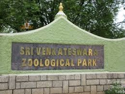

Sri Venkateswara Zoological Park
Sri Venkateswara Zoological Park, also known as SV Zoo Park, is a zoo located at Tirupati in the Chittoor district of Andhra Pradesh, India. It spans over a vast area and is home to a wide variety of animals, birds, and reptiles, offering visitors a chance to observe and learn about wildlife in naturalistic habitats.
Location: Alipiri-Chandragiri Road, Tirupati, Andhra Pradesh, India
Facilities: Safari rides, animal shows, bird watching, and nature trails.
Transportation: Accessible by road from Tirupati city center. Regular buses and taxis are available.